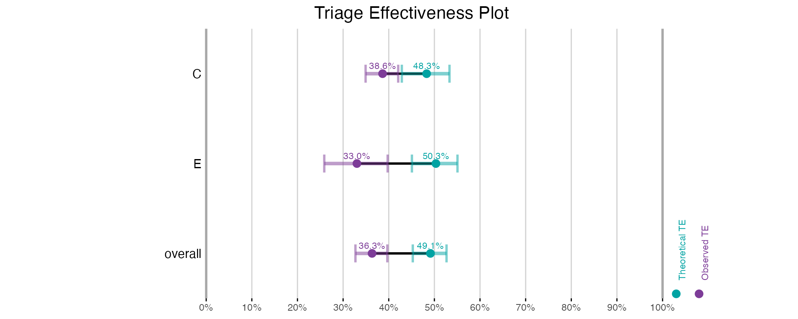
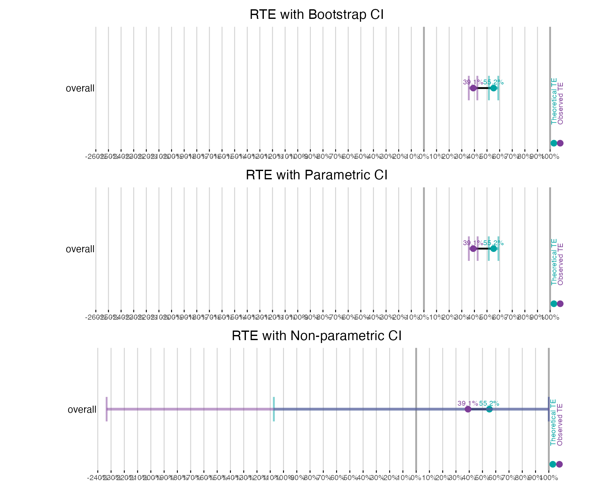

library(trieff)
#> Loaded trieff 1.2.0
library(dplyr)
#>
#> Attaching package: 'dplyr'
#> The following objects are masked from 'package:stats':
#>
#> filter, lag
#> The following objects are masked from 'package:base':
#>
#> intersect, setdiff, setequal, union
# Initialize data once at the start
data <- load_sem_synth() %>%
init() %>%
sim_te()
#> [1] "Filtered to 1044 segments with LOSET cases"
#> [1] "Total LOSET cases: 3843"
#> [1] "Starting multisession with 1 cores. 2025-06-12 12:41:14.257479"
#> [1] "Simulations are done! 2025-06-12 12:41:17.228762"Introduction
Bootstrap analysis in trieff provides confidence intervals for Triage Effectiveness metrics and enables assessment of statistical stability. This vignette demonstrates how to use bootstrapping effectively and interpret the results.
The confidence intervals calculated here can be visualized using the
plotting functions described in vignette("plot_te"). The
visualization provides an intuitive way to understand the uncertainty in
TE estimates.
Two bootstrapping methods are available in trieff:
- Standard Bootstrap: Traditional approach that randomly samples individual cases with replacement.
- Segment Bootstrap: Advanced approach that preserves temporal patterns by sampling segments of continuous queue activity.
Both methods work by repeatedly sampling from the dataset, calculating TE metrics for each sample, and using the distribution of these calculations to estimate confidence intervals.
Prerequisites
- Knowledge on basic TE calculation (see
vignette("calc_wte")) - Simulated theoretical wait times (see
vignette("sim_te"))
Why Bootstrap?
Bootstrapping helps us understand:
- The reliability of our TE metrics
- The stability of our estimates
- The impact of rare events and outliers
For reliable bootstrap analysis, we recommend using at least 3 months of ED data, though this guideline is based on preliminary analysis and may need adjustment for your specific context.
Basic Bootstrap Usage
Let’s start with a basic example using default bootstrap parameters. We’ll use overall_only=TRUE to keep the output focused:
# Calculate TE with bootstrap
te_results <- calc_wte(data,
bootstrap = TRUE,
overall_only = TRUE)
#> [1] "Starting bootstrap iterations 2025-06-12 12:41:17.920562"
#> [1] "Bootstrap iterations done 2025-06-12 12:41:32.657718"
# View results
print(te_results)
#>
#> Triage Effectiveness Analysis Results
#> ===================================
#>
#> Results for Overall
#> -------------------
#> Total patients: 53265 (7.2% LOSET positive)
#>
#> Classification Metrics:
#> Sensitivity: 64.3%
#> Specificity: 73.3%
#>
#> Triage Effectiveness Metrics:
#> OTE: 36.3%
#> TTE: 49.1%
#> OTG: -12.8%
#>
#> Confidence Intervals (95%):
#> OTE: 36.3% (32.7% to 39.9%)
#> TTE: 49.1% (45.4% to 52.7%)
#> OTG: -12.8% (-17.1% to -8.4%)
#>
#> Computation Information
#> =====================
#> Method: Bootstrap calculation (waiting-time-based)
#> Number of iterations: 2000
#> Sample percentage: 100%
#> Distribution span: 95%
#> Confidence intervals: Boot method
#> Calculation time: 2025-06-12 12:41:32.974224The output now includes confidence intervals for each TE metric, showing the uncertainty in our estimates.
Advanced Bootstrap Configuration
The bootstrap process can be customized using several parameters:
# Custom bootstrap settings
te_custom <- calc_wte(data,
bootstrap = TRUE,
overall_only = TRUE,
seed = 123, # use seed to make your results reproducible
bootstrap_params = list(
sample_percentage = 0.8, # Use 80% of data per iteration
n_iterations = 1000, # decrease iterations
distribution_span = 0.99 # Wider confidence intervals
))
#> [1] "Starting bootstrap iterations 2025-06-12 12:41:33.344341"
#> [1] "Bootstrap iterations done 2025-06-12 12:41:45.202865"
print(te_custom)
#>
#> Triage Effectiveness Analysis Results
#> ===================================
#>
#> Results for Overall
#> -------------------
#> Total patients: 53265 (7.2% LOSET positive)
#>
#> Classification Metrics:
#> Sensitivity: 64.3%
#> Specificity: 73.3%
#>
#> Triage Effectiveness Metrics:
#> OTE: 36.3%
#> TTE: 49.1%
#> OTG: -12.8%
#>
#> Confidence Intervals (95%):
#> OTE: 36.3% (31.4% to 41.7%)
#> TTE: 49.1% (43.3% to 54.5%)
#> OTG: -12.8% (-19.9% to -6.1%)
#>
#> Computation Information
#> =====================
#> Method: Bootstrap calculation (waiting-time-based)
#> Number of iterations: 1000
#> Sample percentage: 80%
#> Distribution span: 99%
#> Confidence intervals: Boot method
#> Calculation time: 2025-06-12 12:41:45.484291Key parameters:
- sample_percentage: Controls resample size (default = 1)
- n_iterations: Number of bootstrap iterations (default = 2000)
- distribution_span: Width of confidence intervals (default = 0.95)
Standard vs. Segment Bootstrap
The trieff package offers two different bootstrapping methods:
Standard Bootstrap
The standard bootstrap method (bootstrap = "standard" or
simply bootstrap = TRUE) randomly samples individual
patient cases with replacement. This is the traditional bootstrap
approach.
# Standard bootstrap
standard_bootstrap <- calc_wte(data,
bootstrap = "standard")
#> [1] "Starting bootstrap iterations 2025-06-12 12:41:45.818225"
#> [1] "Bootstrap iterations done 2025-06-12 12:42:00.609282"
plot_te(standard_bootstrap)
Segment Bootstrap
The segment bootstrap method (bootstrap = "segment")
preserves temporal patterns by sampling segments of continuous queue
activity. This approach maintains the dependency structure between
patients who were in the ED during the same time period.
# Segment bootstrap
segment_bootstrap <- calc_wte(data,
bootstrap = "segment")
#> [1] "Using existing segments for bootstrap 2025-06-12 12:42:01.276635"
#> [1] "Starting segment bootstrap with 3091 unit-segment pairs, 3091 samples per iteration, 2000 iterations 2025-06-12 12:42:01.277588"
#> [1] "Segment bootstrap iterations done 2025-06-12 12:42:20.555734"
plot_te(segment_bootstrap)Comparing Bootstrap Methods
While our theoretical understanding suggests segment bootstrapping should be preferred for emergency department data, our empirical testing has shown that both methods typically produce equivalent results in practice with comparable confidence intervals amd neither consistently producing wider or narrower intervals than the other. Despite theoretical differences in how they handle data dependencies, their practical outputs in terms of running means and confidence interval convergence are remarkably similar. Both methods are maintained in the package to support methodological research and to allow users to validate results across different bootstrapping approaches, but for most practical applications, the standard bootstrap provides an efficient and reliable option.
# Function to extract confidence intervals
get_ci_width <- function(result) {
ci_width <- result$results %>%
mutate(ote_ci_width = boot_ote_var_upper - boot_ote_var_lower) %>%
select(unit, ote_ci_width)
return(ci_width)
}
# Compare CI widths
standard_ci <- get_ci_width(standard_bootstrap)
segment_ci <- get_ci_width(segment_bootstrap)
# Display results
comparison <- standard_ci %>%
left_join(segment_ci, by = "unit", suffix = c("_standard", "_segment")) %>%
mutate(difference = ote_ci_width_segment - ote_ci_width_standard)
print(comparison)
#> # A tibble: 3 × 4
#> unit ote_ci_width_standard ote_ci_width_segment difference
#> <chr> <dbl> <dbl> <dbl>
#> 1 overall 0.0699 0.0696 -0.000269
#> 2 C 0.0715 0.0712 -0.000296
#> 3 E 0.139 0.130 -0.00934How Segment Bootstrap Works
The segment bootstrap can be described by a custom block bootstrap that operates by:
- Identifying segments of continuous queue activity (periods where the queue starts at 0 and ends at 0)
- Sampling these segments with replacement
- Calculating TE metrics for each resampled dataset
This approach preserves the temporal structure of patient flow, including:
Arrival patterns
Concurrent cases
Crowding effects
Priority interrelationships
While block bootstrapping reduces the effect of temporal effects, we argue that this approach should remove this effect altogether. However, keep in mind that this does not seem to affect the results, as stated above.
Convergence Analysis
Convergence analysis helps verify that our bootstrap estimates are stable. When check_convergence=TRUE (which it is by standard), calc_wte generates three types of diagnostic plots:
- Running Mean Plot
- Shows how the average TE estimate evolves with more iterations
- Should stabilize to a roughly horizontal line
- Large fluctuations at the end suggest need for more iterations
- CI Width Plot
- Shows how confidence interval width changes with iterations
- Should decrease and stabilize
- Continued narrowing suggests potential for more precise estimates
- Standard Error Plot
- Shows how the standard error of estimates changes
- Should decrease and stabilize
- Helps assess estimate precision
Let’s examine convergence for our analysis:
# Calculate TE with convergence checking
te_convergence <- calc_wte(data,
bootstrap = TRUE,
overall_only = TRUE,
check_convergence = TRUE)
#> [1] "Starting bootstrap iterations 2025-06-12 12:42:21.699323"
#> [1] "Bootstrap iterations done 2025-06-12 12:42:37.25343"
# View convergence plots
print(te_convergence$convergence)
#>
#> Convergence Analysis Summary
#> =========================
#> Metrics analyzed: ote_te, tte_te, btte_te

Interpreting convergence plots: - Look for stabilization in all three metrics - Check if late iterations show systematic changes - Verify CI width has reached reasonable stability
If convergence looks poor, consider: - Increasing n_iterations - Checking for data quality issues - Verifying sufficient sample size
Comparing Confidence Intervals for RTE
While RTE CAN use direct calculation to show confidence intervals, bootstrapping offers the best balance of validity and usable results in our experience. Let’s examine the different approaches:
# Calculate RTE with bootstrap
rte_bootstrap <- calc_rte(data, bootstrap = TRUE, overall_only = TRUE)
#> [1] "Processing 2 units with LOSET cases in parallel 2025-06-12 12:42:38.455676"
#> [1] "Processing unit: C 2025-06-12 12:42:39.355878"
#> [1] "Processing unit: E 2025-06-12 12:42:40.283046"
#> [1] "Starting RTE bootstrap with 2000 iterations, sample size 3529 from 3529 valid time-critical patients at 2025-06-12 12:42:41.083263"
#> [1] "RTE bootstrap completed at 2025-06-12 12:42:59.705387"
# Calculate RTE with direct calculation (no bootstrap)
rte_direct <- calc_rte(data, bootstrap = FALSE, overall_only = TRUE)
#> [1] "Processing 2 units with LOSET cases in parallel 2025-06-12 12:43:00.708675"
#> [1] "Processing unit: C 2025-06-12 12:43:01.681776"
#> [1] "Processing unit: E 2025-06-12 12:43:02.693575"
# Create plots with different CI approaches
plot_bootstrap <- plot_te(rte_bootstrap,
title = "RTE with Bootstrap CI",
min_x = -2.6)
plot_parametric <- plot_te(rte_direct,
ci_vars_override = "parametric",
title = "RTE with Parametric CI",
min_x = -2.6)
plot_nonparametric <- plot_te(rte_direct,
ci_vars_override = "nonparametric",
title = "RTE with Non-parametric CI")
# Display plots
patchwork::wrap_plots(plot_bootstrap, plot_parametric, plot_nonparametric, ncol = 1)
Summary
Bootstrap analysis in trieff provides valuable insights into the reliability of TE metrics. Key points:
- Use bootstrapping to get confidence intervals for TE metrics
- Choose the appropriate bootstrap method:
- Standard bootstrap for independent cases
- Segment bootstrap for preserving temporal patterns
- Verify convergence using diagnostic plots
- Adjust parameters based on dataset size and precision needs
- Consider computational resources for large datasets
Remember that while bootstrapping provides valuable statistical information, it should be combined with domain knowledge and practical considerations when evaluating triage system performance.